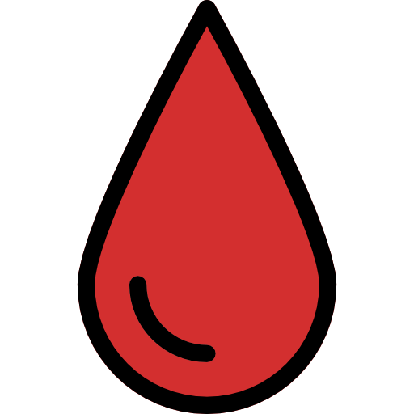

Red - The Blood of the Lamb
The absolute gospel is seen throughout the Bible in the color of red because of the Lamb of God's blood shed for sinner. Red is the scarlet thread that is interwoven throughout the Bible, from Genesis to Revelation. Rahab who lived in the wall of Jericho was saved because of a red cord let down so that the Israelite army would spare her life. The lamb's blood applied to the doors of the Israelites on the first Passover saved them by the “sprinkled the blood, so that the Destroyer of the firstborn might not touch them” (Heb 11:28), thus the meaning of Passover. And naturally, Jesus shed blood is what cleanses us from all unrighteousness (1 John 1:9, 2 Cor 5:21) and even at Calvary where “they stripped him and put a scarlet robe on him” (Matt 27:28)
Blue - Symbolic of the Heavenly Realm
In Ezekiel's vision of the glory of the Lamb of God, he wrote “And above the expanse over their heads there was the likeness of a throne, in appearance like sapphire; and seated above the likeness of a throne was a likeness with a human appearance” (Ezk 1:26) and sapphire is mostly blue in color. Blue will also be one of the dominant colors in the New Jerusalem that descends out of heaven.
White - The Colour of Righteousness
The color of the righteousness of God comes at the expense of the red blood of Christ. The Psalmist knew that forgiveness comes only by what he writes, “Purge me with hyssop, and I shall be clean; wash me, and I shall be whiter than snow” (Psalm 51:7). The Apostle John writes about those slain for their faith “were each given a white robe and told to rest a little longer, until the number of their fellow servants and their brothers should be complete, who were to be killed as they themselves had been” (Rev 6:11). John “saw them standing before the throne, and before the Lamb, arrayed in white robes. And one of the elders said unto me, Who are these clothed in white robes? and where did they come from? And I said unto him, My lord, you know. And he said unto me, These are they who come out of the great tribulation, and have washed their robes, and have made their robes white in the blood of the lamb” (Rev 7:13-4).
Gold - It represents God's Love
The colour gold points to God's Deity, Divinity and Sovereinty, the mercy seat was pure gold as well as the two cherubim, one each side with wings. (Exo 25:10-21). Gold also stands for Glory, the Godhead, Refining Process. Jesus told the Church of Laodicea to buy from me gold refined by fire, so that you may be rich and white garments so that you may clothe yourselves and the shame of your nakedness may not be seen...(Rev3:18). Peter wrote that "the tested genuineness of your faith more precious than gold that perishes though it is tested by fire..." (1Pet1:7), Kingship, Words of Wisdom, Truth, and Knowledge, Faith, Anointing Oil.